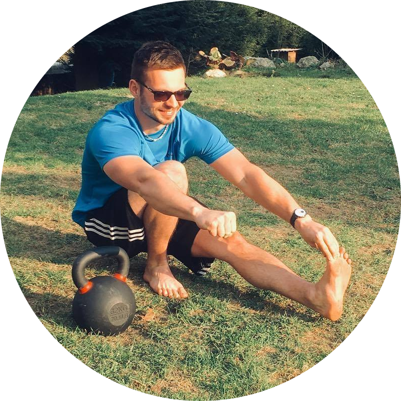

Martin Maryška
Sportovec a budoucí Strongfirst instruktor.
Nadšenec do cvičení podle zásad Strongfirst a v česku podle KB5. V poslední době fanoušek Armwrestlingu. Mimo fyzické aktivity se zajímám o seberozvoj a teď konkrétně učení cizích jazyků a web-developmentu.